Start Mongoose in WebUI mode:
$ java -jar <path_to_jar>/mongoose.jar webui
<current_machine_IP>:8080
Mongoose WebUI is a single page application. It allows to use Mongoose tool via GUI. Also WebUI extends Mongoose tests' reporting with charts.
Below shows the demo of Mongoose run with the default scenario via WebUI. Commentaries are situated at the top of the demo.
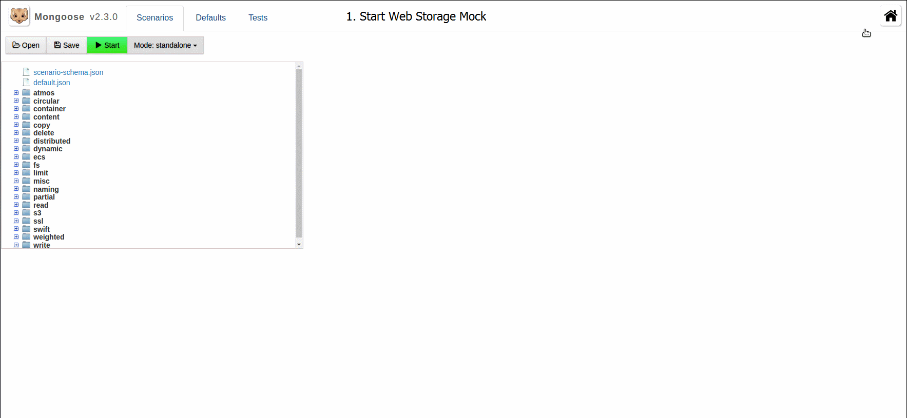
As shown in the demo WebUI has three tabs on the main page. There are Scenarios, Defaults and Tests. The following briefly describes each of them.
On this tab scenarios for Mongoose are shown as a tree. These scenarios are supplied with Mongoose ("out of the box"). You can edit them or run as they are.
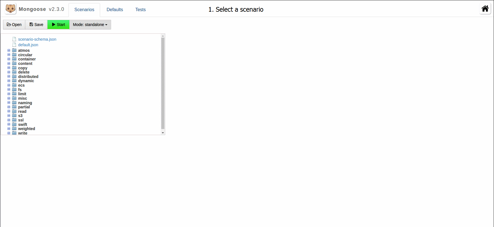
After editing you can save the scenario or open your own.
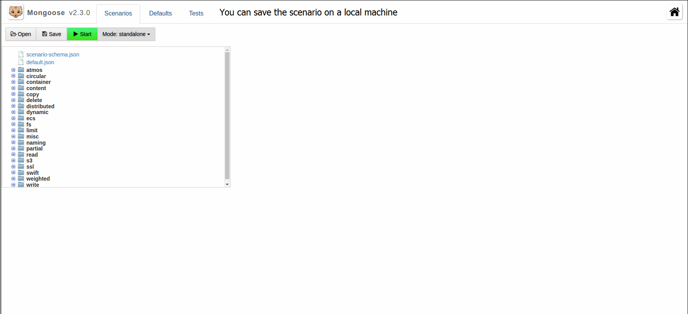
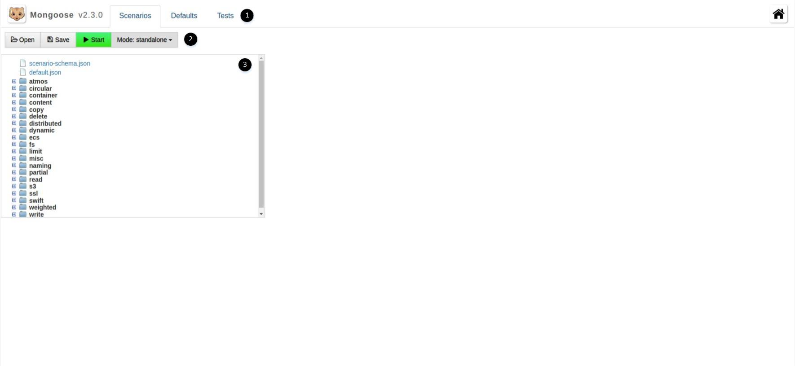
When a scenario has been selected the tree of scenario's properties is open.
Defaults tab is similar to Scenarios tabs. Defaults means Mongoose's configuration. The configuration is also has a tree view.
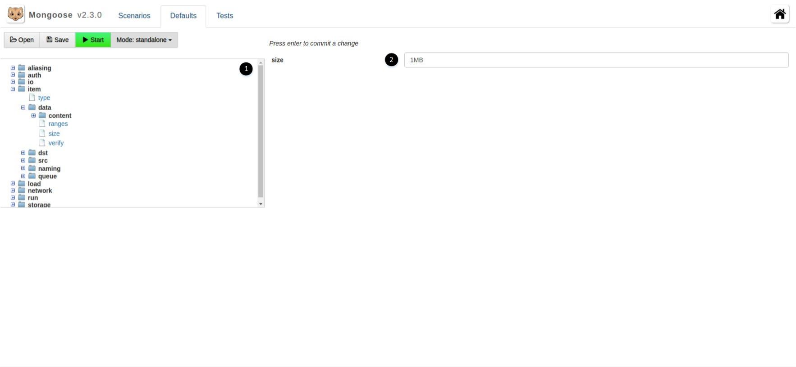
If a test was run, the information about it appears here. You can manage started tests from TESTS tab. You can select a test, stop or remove it.
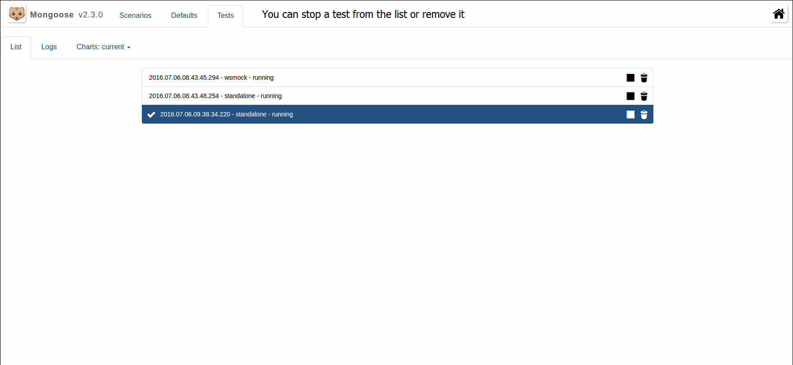
Also you can find here logs' tables and charts for current and total metrics. Examples of charts and chart management are shown below.
Chart with current metrics
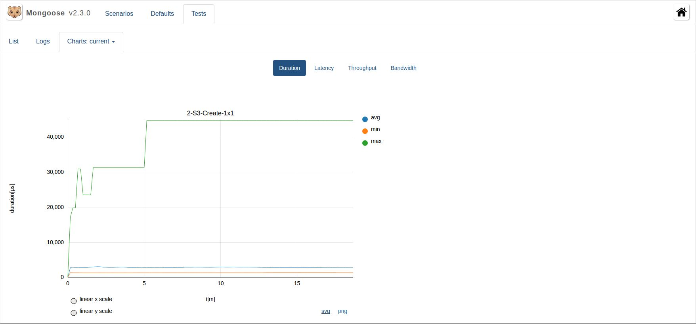
Chart with total metrics
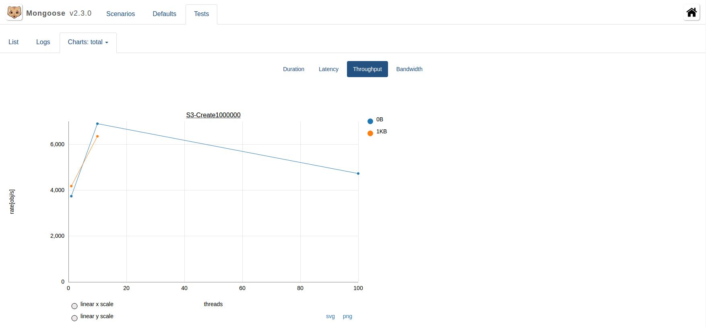
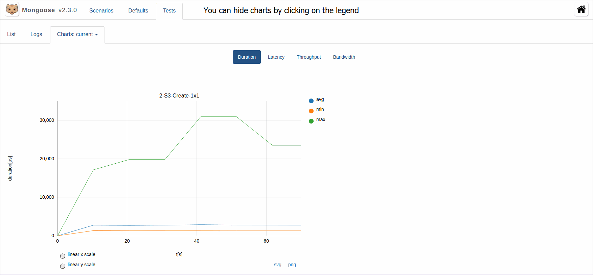
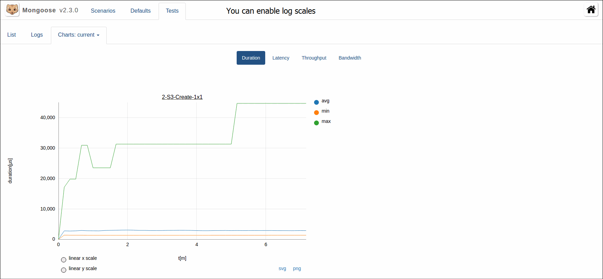
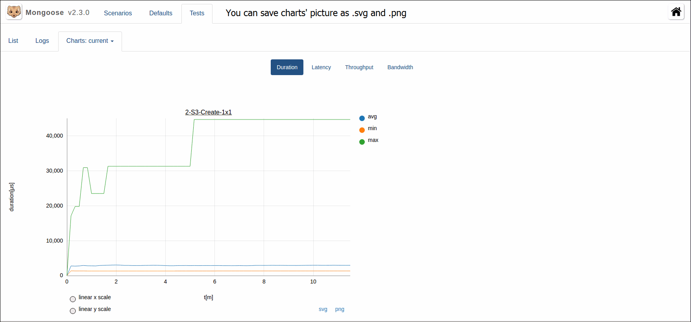